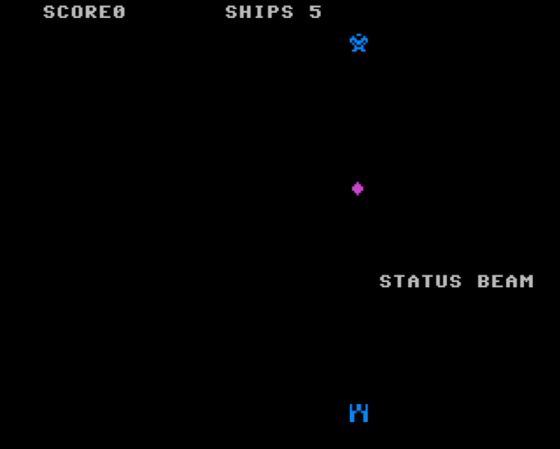

Elon Musk is an impressive individual, programming his first game "Blastar" at the age of 12 (which in 1984 in even more remarkable), and selling it for $500. In 1995 Elon had a business idea, with his brother they created Zip2 (a company that provided and licensed online city guide software to newspapers) whilst sleeping on his office couch and showering at the YMCA, selling it for $307 million. Following this he made and sold X.com for $1.5 billion, now known as PayPal. Giving him the resources to change the world forever...
Elon then founded SpaceX and co-founded Tesla. Working 120 hour weeks, now sleeping on the Tesla factory floor due to his companies struggling to "take off", Elon was and is committed to making space travel reusable and accessible, after all, along with space travel comes infinite resources, energy, space, and a backup to Earth, as well as making the car industry filled with 'S3XY' electric cars to help our own planet out. Advancing battery technology and autopilot whilst he's at it.
Despite the media's constant hammering of Musk, it has driven and motivated him to new heights, resulting in Tesla and SpaceX becoming 2 extremely successful companies. So Elon being Elon, has created half a dozen more. SolarCity, which is now one of the biggest solar panel companies. The Boring Company and Hyperloop to revolutionize travel by eliminating traffic and making travel quick. Starlink for speedy internet wherever you are in the world.
But perhaps the craziest of them all is OpenAI and Neuralink. Neuralink can solve any motor problem, had a stroke where you can’t move one side of your body? No problem. Communication could happen from brain to brain, no need for talking! You can have access to all knowledge you desire thanks to Starlink hooking you up to the internet.
OpenAI is creating general artificial intelligence which would cause an intelligence explosion. You want the cure for cancer? No problem. Elon is surprisingly against the development of general AI as it could go wrong, others aren't creating it without the right precautions so he wants to create a safe version first.